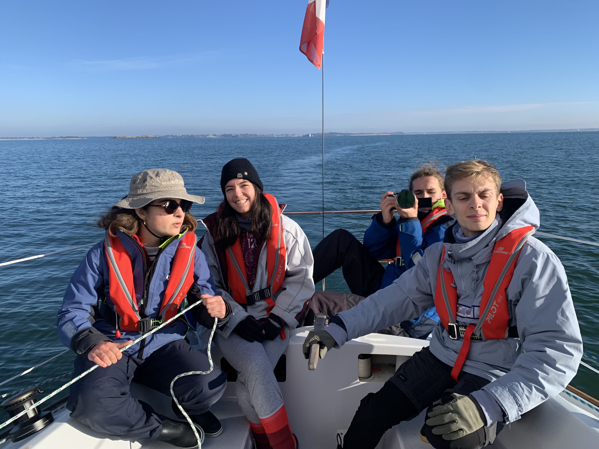

The boat
Damien 40, La Rêveuse.

Four students and recent graduates who want to experience an adventure by linking their common passion, sailing, and an impact project.
Renewable energies are developing, those at sea even more so, but they are very controversial.
From three different engineering schools, Sophie, Noemis Benjamin and Louis will try to answer the questions that arise in the form of a documentary, by traveling through different European marine wind farms by sailboat.
An engaged navigation and a documentary for:
- Set out to meet multiple stakeholders
- Identify points of tension
- Investigate to learn the reality on the ground
- promote a vision of development on a European scale
- Generate interest in low-carbon energy sources
- Destroy false preconceived ideas
- Communicate on technical, political and economic solutions